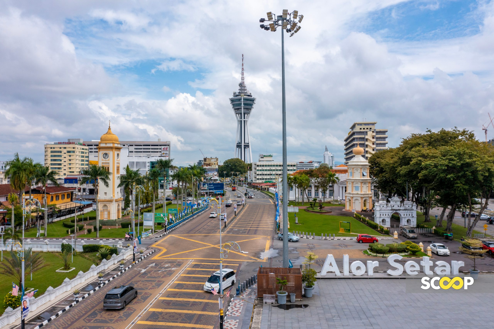
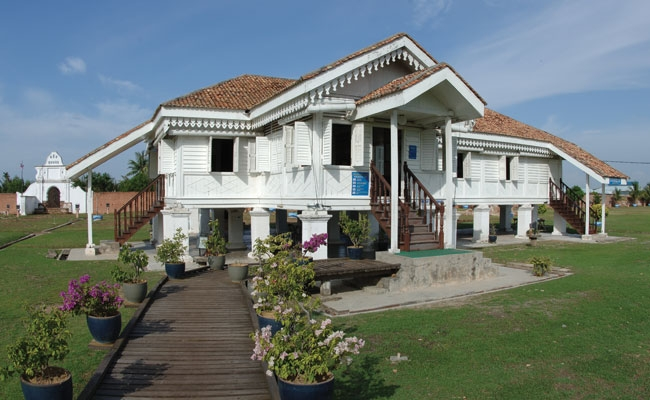

About My Home Town
Kedah is my hometown and it is a peaceful place to live. Many people in Kedah work in farming, especially growing rice, which is why the state is called the Rice Bowl of Malaysia. I like Kedah because it has beautiful scenery and famous places such as Langkawi that attract many visitors.
 